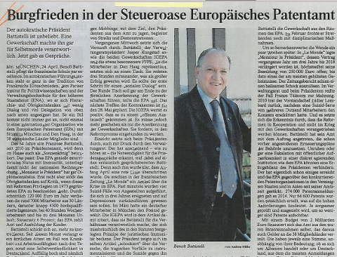

06.08.15
Posted in Patents at 3:53 am by Dr. Roy Schestowitz
Limiting entry of patents on software

Summary: More stories about the invalidation of software patents in the US and some responses from people who make a living handling patents
PATENTS on software are gradually being invalidated, not just failing to be granted in the first place. The Supreme Court (also known as SCOTUS) decided that if a patent on an abstract concept has insufficient merit, then it shouldn’t be upheld and should instead be discarded. This discouraged some litigation, as numbers serve to demonstrate. Patent trolls and giant corporations would rather intimidate using patents (shakedown) than actually sue. SCOTUS has of course endorsed patent trolling since then and it very much knew what it was doing:
Not only did Scalia acknowledge such a beast as a patent troll, but threw in my second-most favorite Latin phrase of all time, in terrorem which means “into or about fear”.
This new Securus press release, published from Texas, says “Securus Expects Some Patents To Be Invalidated – No Impact On Quality Or Scale Advantage of Securus’ Industry Leading Patent Portfolio” (the context being some of their patents having been invalidated).
It seems clear that companies which base their business around patents are worried. It looks like the landscape is changing and SD Times, a magazine focused on software development and Microsoft promotion, has asked: “What just happened to software patents?”
Well, as lot of them are going away. “Rightly or wrongly,” says the author, “these voices against software patents have become a cacophony. Courts listen to public opinion—don’t let anyone fool you into believing differently. So, when the public became concerned about the software-patent “threat,” so did courts, including the U.S. Supreme Court.”
Activism in the area does make a different, make no mistake about it. That’s why patent lawyers have been so adamant and determined to take over the media, spreading the false impression that nothing has changed after Alice.
“Software is reducible to mathematics, so software must never be patentable if we are to advance science rather than guard or create monopolies.”The author proceeds to stating: “This mutated strain of cases harks back to a Supreme Court case decided in 1948 that had nothing to do with computer software: Funk Brothers v. Kalo. A fundamental tenet of patent law has long been that laws of nature (e.g., E=MC2) cannot be patented. Funk Brothers pushed that much further, saying that a newly discovered law of nature cannot even be the basis for patenting a practical application of that law to solve a real-world problem. Thirty years later, the Supreme Court applied this reasoning to a software-related patent in Parker v. Flook.”
Software is reducible to mathematics, so software must never be patentable if we are to advance science rather than guard or create monopolies. Here is a company in DC bragging about acquiring patent monopolies on software, boasting some more in a press release [1, 2]. This is in no way advancing science; in this particular case it can even harm health.
A patent lawyers’ blog, which often gives the platform to Microsoft and pro-software patents voices (never the opposite), is giving the platform to a Judge who is defending patent trolls. Among his words of ‘wisdom’: “The less enforceable the patent is in various ways, the lower the value of the patent for the whole portfolio.”
In other words, this judge advocates more lawsuits (business for him) or shakedowns. Recall what patents were conceived for in the first place. It was about publication in exchange for a temporary monopoly, not a parade of litigation. A lot of patent lawyers, whose business is litigation and armament (in the legal sense), seem to conveniently forget or ignore that. Thankfully, as the SCOTUS tries to revert back to some level of sanity, the future of software patents does not look promising. █
Permalink
 Send this to a friend
Send this to a friend
Posted in Europe, Patents at 2:51 am by Dr. Roy Schestowitz
Summary: Spanish article from Público translated into English, demonstrating the greater role played by the media these days
THE EPO‘s management, knowing that it is already in a lot of trouble, has resorted to hiring thugs, attacking staff, censoring its network, and so on. It’s symptomatic of an abusive regime that feels threatened, for if staff (making up the EPO) and by extension the European public (subsiding the EPO) knew what EPO management was up to, prosecution too would be a possibility, not just the dead end of some people’s career.
“Público,” wrote SUEPO, “published an article (printable version) titled “The European Patent Office is violating labour laws, according to the employees”.
“The article reports on the authoritarian drift of the European Patent Office under the presidency of Mr Battistelli with the introduction of an investigation unit (supported by Control Risks), the increase in disciplinary procedures and the violation of fundamental rights of staff with the latest health care reform (lack of confidentiality of medical records and house arrests for invalids).”
Here is the collection of translations [PDF] with emphasis added where it matters:
The European Patent Office is violating labour laws, according to the employees
Trade union sources claim that the President of the organization has imposed a ruling which is having a massive effect on the health of the employees, their pensions, and their labour rights, such as the right to strike.
CAROLINA GARCÍA MUNDI
MADRID.- The European Patent Office (EPO) is encountering first-hand the problems of the employees. The President of the organization since 2010, and also President of the Administrative Council of the EPO, Benoît Battistelli, “is managing the Office in an authoritarian and antisocial manner, which is causing problems at the Office”. This at least is the view expressed by sources at SUEPO, the Staff Union of the European Patent Office, in statements made to Público.
The EPO, with headquarters in Munich and three branch offices in The Hague, Berlin, and Vienna, has a staff of 7,000 people, 480 of them Spanish nationals. The employees insist that the measures being imposed by Battistelli are having a massive effect on them. “Not only the rules about patents, but also about pensions, health, employees’ rights”. The President of the EPO, which is responsible for validating inventions and the patenting of them, is also the President of the Administrative Council. The Council is formed of 38 members, representing the 38 countries which make up the European Patent and Trademark Office, and is responsible for personnel matters as well as for defining the financial structure and arrangements, and the President is making his voice very clearly heard: He is the person who has the last word; he is the legislator.
In 2014, Benoît Battistelli imposed a ruling which is prejudicial to the rights of the employees in matters relating to trade unions, labour relations, and medical benefits. Labour rights in particular have come under attack. “He’s going to be the person who decides whether or not there’s going to be a strike, and how long it can go on”. “There’s massive repression being imposed”, sources in the trade union insist.
The staff can also be placed under investigation if someone utters an anonymous denunciation against them. They are told that they are going to be investigated, including the personal E-mails, but they can’t do anything about it. “The only people you can talk to are your wife and your doctor”.
One spokesperson for the union believes, however, that the investigation was only started because the person concerned was a significant member of the union, which was putting pressure on the Administrative Council and on Battistelli.
The basic rights of the employees are being violated, in particular with regard to their health. Battistelli is taking pseudo-medical decisions and “targeting people who are ill”, union members maintain. And there’s more: “The doctor, appointed by the President, decides whether a person is ill or not, while up to now three opinions were sought from three different doctors. If a person reports sick, they have to produce a certificate on the third day, and you can be subjected to examinations in your own home if you’re ill”.
As well as this, the medical records of each employee are stored on a database, and the staff have no idea who controls it. Confidentiality of medical records is a right and an obligation. In Spain, if confidentiality is breached, it may be treated as a criminal offence.
Pensions are also coming under attack. 30% of the salary of each employee is put into a savings fund every month. However, if you come from the State in which you are working, this pension can be reduced. “If I go to the State where I’m living, I’m breaking a rule and they penalize me. For example, if a Spanish national contracts a terminal illness, he can’t go back to Spain until he’s 55. If you do go, they can take disciplinary action and cut the pension”.
The EPO union has also come under fire. Union members have been having their E-mails blocked, from within the Office and outside. They cannot communicate with one another. They cannot complain, because if they do so under their real name they lay themselves open to disciplinary procedures. This situation, in which privacy is being violated, would constitute a criminal offence in Spain, as a lawyer confirmed (responsible for the case of the EPO personnel).
This breach of basic rights of the staff has already been brought before the courts. Sources from the SUEPO union confirm that the ruling by the Dutch court of second instance was in their favour, requiring Battistelli to revoke this ruling and to allow union members to continue sending E-mails, as well as obliging him to begin negotiating with the union.
But the decision by the court got nowhere. Battistelli issued a memo to all the staff to inform them that he was not going to abide by the ruling, because “it is dangerous for the Office for these initiatives to be taken, which are supported by the union, the primary concern of which should be to defend the interests of the personnel. You can nevertheless count on my perseverance and commitment to defending our organization”. Sources from the union maintain that this memo “is a propaganda exercise and an attack on immunity”.
Immunity is something which all the international organizations have. The implication is that the individual organization itself is independent and is not subject to the laws of the country in which it is based. This characteristic, however, comes to create great power, which can then degenerate into abuse. “They are using this immunity to change the rules about labour relations, about the unions, about health, and about basic rights and liberties. This is an abuse of immunity”, is how union sources condemn the action.
“The European Parliament is dodging the issue”
SUEPO, the trade union of the European Patent and Trademark Office, has contacted a number of national parliaments: The Netherlands, Luxemburg, and the European Parliament.
This was done in an anonymous and personal way, under the essential precondition that the identity of the persons concerned be kept secret so as not to be thrown out of their jobs. They simply provided the information needed for the parliamentarians to investigate and pursue the matter with the European Commission. The reaction by the European Commissioners and the politicians, however, has been entirely passive, dodging the issue on the pretext that the EPO is an independent international organization. “It is not part of the European Union, and they have no authority over it. They do have political authority, but they’re doing nothing”, according to union members.
“Battistelli makes the rules, he’s the judge and jury. He ought to be at least supervised by the Member States”, union sources insist. “But nothing is supervised, not the money or the power. The EPO does not receive money from the Member States; on the contrary, they reap a lot of benefit from it”, as the sources confirm.
“We have no legal recourse when it comes to labour relations”
All the employees, regardless of whether they are part of the union or not, take the same view. “We don’t have any legal recourse for labour issues, because the judge is the President”. They are in an indefensible situation; they cannot defend their fundamental rights if they cannot change the rules, and Battistelli makes the rules.
The only way they can exert any pressure is by way of the International Labour Organization (ILO), but with the difficulty that they cannot pursue claims as a union, but only as individuals. “Action by a union is vetoed. The EPO is not obliged to change the rules because the claim has to be from an individual, and only affecting that individual”, they maintain.
A law firm in Madrid has been contacted to pursue the issue. “By way of a media campaign, contact with the CCOO and UGT unions so as to access to the European Trade Union Confederation, contact with parliamentary groups, and with the representative of the Spanish Government, Patricia García Escudero, we are aiming to reopen negotiations, as well as pursuing legal recourse in Spain, despite the immunity”, is the view taken by one of the attorneys handling the case.
In the coming days we are going to look deeper into how the EPO stepped out of rationality, choosing to police people by force and intimidation. █
Permalink
Send this to a friend
06.07.15
Posted in Europe, Patents at 5:12 am by Dr. Roy Schestowitz
Summary: Benoît Battistelli’s patent office eroded the standards by which patents are assessed (in order to increase EPO income and artificially elevate measurable yardsticks like patent numbers) while society is paying the price; The European Patent Lawyers Association (EPLAW) complains about lack of separation of powers
THE EPO‘s abusive behaviour is causing great trouble to all, except perhaps patent lawyers (although they too increasingly complain because of loss of legitimacy). With lousy patents on software being granted (against the most fundamental rules), companies in the UK continue to come under attack, even eleven times in a row, as in this new case [1, 2, 3, 4] where Rovi sues Virgin. “All of the eleven patents asserted by Rovi have now either been found invalid,” says Telecom Paper, “and/or revoked by either the English Court or by the European Patent Office (EPO) which was responsible for granting them.” According to Simon Rockman from The Register: “The specific claim was for Electronic Programme Guide software using information downloaded from the internet.” So this was a software patents, again (this is the eleventh time!).
“EPO management has been exercising too much power and we are perpetually seeing the impact of it.”Why were these granted in the first place? The EPO compromises quality in order to increase revenue and the public is paying the cost/toll.
EPO management has been exercising too much power and we are perpetually seeing the impact of it. Even patent practitioners are concerned. As SUEPO put it (citing IP Kat‘s comment regarding this letter to Battistelli, “The Council of Bars and Law Societies of Europe (CCBE) is the representative organisation of more than 1 million European lawyers through its member bars and law societies from 32 full member countries, and 13 further associate and observer countries.”
The original, from EPLAW (increasingly a critic of the EPO), is a complaint about the lack of independence of the Boards of Appeal (which relates to patent scope. The author diplomatically says “EPLAW is pleased to see that the Administrative Committee (AC) and the EPO are actively engaged in furthering the independence of the BoA.”
Why did the Boards of Appeal lose independence in the first place? Battistelli has been intimidating them and removing some of their powers, not just BoA staff whom he perceived as not loyal enough (to him and his cronies). █
Permalink
Send this to a friend
Posted in America, Patents at 4:38 am by Dr. Roy Schestowitz
Comprehensive review of reports about the PATENT Act
Summary: Mega-corporations from the US have turned patent reform attempts into a self-serving pseudo-reform effort, whose outcome bears little or virtually no impact on the vast majority of people
THE Protecting American Talent and Entrepreneurship Act (PATENT) Act, which we wrote about before, is about protecting mega-corporations, not “American Talent and Entrepreneurship”. It protects them from smaller companies, especially from patent trolls. There was a lot of coverage about it last week [1, 2, 3, 4, 5, 6, 7, 8, 9, 10, 11, 12, 13, 14, 15, 16, 17, 18, 19, 20, 21, 22, 23, 24, 25, 26, 27, 28], some coming from lawyers’ sites [1, 2, 3, 4]. Proponents of software patents, such as Gene Quinn and Steve Brachmann, would say that “Vocal minority cannot keep PATENT Act from passing Senate Judiciary” among other things, but the matter of fact is, this so-called ‘reform’ achieves almost nothing of real use. It’s a bit like the so-called ‘Freedom’ ACT, which got diluted to the point of uselessness. Even some of its original backers have withdrawn support for what it ended up like. An article titled “Could Patent Trolls Be Harder to Defeat Than the NSA?” said: “Silicon Valley lobbyists were feeling pretty good on Tuesday. Several gathered at Bobby Van’s, a downtown D.C. bar, to celebrate their successful campaign to curb the National Security Agency’s mass surveillance practices, after a two-year effort.
“But two days later, it was an entirely different story as Senate lawmakers debated a patent bill that’s supposed to curtail patent trolls — companies expressly designed to sue other companies for use of patents they own, a practice some liken to extortion. It wasn’t the bill it once was, tech lobbyists lamented, as Senate leaders approved language that was meant to placate Silicon Valley; the pharmaceutical and biotech industries; and universities that don’t want their patent portfolios devalued.”
“The bill, as initially presented, garnered a good deal of support from traditional reform supporters [...] amendments or revisions to the bill, nearly all of which could diminish (or even extinguish) the enthusiasm of current supporters and endanger the bill’s chances to move forward.”
–The HillIn both cases, laws are being passed to benefit large corporations. They totally hijack reform attempts, too. If not directly, they do it through lobbyists and proxies like trade groups (see “Trade group CEO warns patent trolls may chase tech companies out of U.S.”). Based on this statement from Grassley, he seems not to mind this distortion of his effort and political media is largely supportive of this distortion, calling it a “light at the end of the tunnel” (in headline plus body!).
“After nearly three years of patent reform discussions,” wrote The Hill, “there appears to be some light at the end of the tunnel. On Thursday, the Senate Judiciary Committee plans to mark up their Protecting American Talent and Entrepreneurship Act (PATENT) Act, which at present is a package of patent litigation reform measures aimed at making the business of frivolous litigation less attractive to those who like to game the system for financial gain. The bill, as initially presented, garnered a good deal of support from traditional reform supporters, including small businesses, hotels, banks, retailers and the tech industry. Even universities, who dislike the House’s Innovation Act, have expressed tepid support for the PATENT Act.
“But what if that light is not the other side of the tunnel, but an oncoming train?
“Last-minute negotiations have unlocked a Pandora’s box of possible amendments or revisions to the bill, nearly all of which could diminish (or even extinguish) the enthusiasm of current supporters and endanger the bill’s chances to move forward. And almost all of them are focused on changing procedures established just a few years ago in the last round of patent reform.”
Whether this passes or not, there’s not much of a solution in it. In a sense, it may prove to be only a waste of effort. These people don’t speak about patent scope but about the scale of the plaintiff and who pays litigation costs.
Don’t waste much time watching this PATRIOT Act debate; it’s not part of the solution, except perhaps to issues of mega-corporations. Eventually, they always get what they want, just like in so-called ‘free’ ‘trade’ agreements. Revealing their collusion is means for garnering public opposition and backlash. █
Permalink
Send this to a friend
Posted in Europe, Patents at 3:51 am by Dr. Roy Schestowitz
Summary: ‘Storm in the Glasshouse’, an article from one week ago in the German media (covering Control Risks being given taxpayers’ money to protect mischievous management)
AN ARTICLE from Süddeutsche Zeitung was mentioned the other day because it covered the EPO‘s reliance on spies to intimidate staff and journalists (Control Risks involvement is confirmed by the EPO). We now have the collection of translations [PDF] from SUEPO’s Web site and here is the article in English:
31 May 2015, 19:06
Storm in the Glasshouse
The European Patent Office won’t settle down. New internal memos, directed against staff representatives, are causing a stir. The in-house investigation department is said to be understaffed, and word has it that crisis-management specialists are to be brought in from London to look into accusations of bullying.
By Katja Riedel
The law gazette Juve isn’t given to using excitable language, so if Juve compares the crisis at the European Patent Office (EPO) with storm front Niklas over Munich, then it’s obviously taking the situation seriously. There has indeed been a storm brewing for many months in the glass building on the bank of the Isar, and it looks as if a very brief break in the weather has already come to an end.
“Social dialogue” is what they called the round of peace talks ordered by the chief executive body, when the President of the Office, Benoît Battistelli, and representatives of the union Suepo, up to now not officially recognized, were supposed to start talking to each other. This dialogue, which was supposed to end not only with conflicts resolved but also with the union being formally recognized, now appears to have gone on the rocks again, after just the second meeting, held last Thursday. That, at least, is how the staff representatives see things. Smoke screening, a marketing ploy for the President – word has it that nothing else came of the talks, and nothing else is to be expected. On the other hand, the Office, at least according to its spokesman Rainer Osterwalder, is hoping that the path to discussions will not be closed again, having hardly been open. People had been hoping for a great deal from the talks.
The Administrative Council, on which representatives of the 38 Member States sit, had called for this dialogue, because the conflict between personnel and management has been damaging the function and image of the EPO for a long time. The Office is facing great changes, but for more than a year the staff representatives have been protesting loudly about Battistelli’s plans for reform. The reforms are supposed to enhance the efficiency of patent examinations, and that has in fact been achieved. The productivity of the patent examiners is said to have risen by 16 percent in the first three months of the year. The Member States are benefitting from this. Germany has apparently received 140 million Euros from the profits achieved by the EPO, according to the staff union. Protecting intellectual property is an attractive prospect for the individual states – and the more patents that are issued, the more lucrative it gets.
Anonymous accusations, defamations and threats piling up
For the staff, the reforms are bringing about a lot of changes, such as a new, performance-based career system; this involves checks and balances for the employees, and they are protesting about them. Anyone not turning up for work because of illness, for example, gets deductions from their salary. The staff are afraid that the pressure on the patent examiners may well lead to more patents, but that quality is going to suffer. This concern has recently been voiced not only by the people at the Office; patent attorneys are getting worried too.
The fact that the mood at the EPO has deteriorated so much can also be attributed to the internal activities of what is known as the Investigation Unit, a body which looks into accusations against members of staff, for example due to bullying. Any staff member can make these accusations against colleagues and superiors, which results in the taking of statements from witnesses, and only at the end do the accused get a chance to be heard. Over the past few months this unit has had a lot to do, with the anonymous accusations, defamations, and threats piling up.
One particular scandal has sprung up over a ban on entering the premises which Battistelli has imposed on a judge who is actually an independent operative. Battistelli suspected him of being the originator of these kinds of letters, and kicked him out – for reasons of securing evidence, according to the President. The judge can in fact only be suspended by the Administrative Council, as the highest executive body, and they only approved the action after it had been carried out. This was followed by a storm of indignation, but Battistelli has stuck to his guns. Now a new internal investigation is under way, which again is causing a stir, and promises to be anything but promising with regard to the peace discussions which were agreed on. This investigation is directed specifically against staff representatives. Which of them have been named is not yet known. Witnesses are already being heard in pursuit of accusations of bullying, and those accused have still not been approached. The unit is bringing in help for the new investigation. Because the in-house team is said to be understaffed, an outside company has been asked to assist, says EPO spokesman Osterwalder. The people concerned are said to be the London-based Control Risks Group, who carry out investigations on an international level, and who, in their own words, “help organizations with political and security risks in complex and hostile environments”. Real crisis specialists, in other words. It was not the President, but the department itself which chose this company, as EPO spokesman Osterwalder is keen to emphasise. Battistelli himself is apparently not informed of the contents of such investigations, and any staff member can make a report and set an investigation in motion. It is only when the facts have been determined that the President decides on disciplinary measures.
But that’s small solace for the union representatives who may have been accused, and who are still supposed to be negotiating with him about social peace.
Icy climate in the European Patent Office: Behind the bright façade, the path to discussions between staff and management is proving to be very rocky indeed.
There is a lot more coming about the Control Risks Group affair. We have more to show in days to come, so stay tuned. █
Permalink
Send this to a friend
06.06.15
Posted in Europe, Patents at 5:54 am by Dr. Roy Schestowitz
The goal of censoring critics

Summary: Benoît Battistelli and his ilk are not actually interested in making changes, only in silencing their critics
AT THE increasingly disgraced EPO, not much publicly happened in the month of May (and much of the prior month) because staff representatives tried a more diplomatic approach, assuming (quite wrongly) that EPO management would accept and formally recognise staff participation in decision making, workers’ rights, etc. Things may be just about to explode again because the staff aren’t having/tolerating any of the management’s pretenses of concessions, especially not when the management preys on staff and European media. The EPO seems to have opted for delaying tactics (giving the impression of negotiation) while nasty, shady, and privatised (state-connected) spies stab staff in the back.
Many IP addresses are being blocked this week due to DDOS attacks on Techrights; we have reasons for assuming it’s related to EPO coverage (we have a lot more coming about EPO management), for reasons we explained before [1, 2, 3, 4].
According to SUEPO’s site: “The last tri-partite meeting (Administrative Council/Office/Unions) on Union recognition took place on 28 May. Neither the Office nor the Administrative Council (AC) have given any indication that they intend to involve SUEPO in any form of serious collective bargaining.
“The EPO also refuses to stop investigations against staff and union representatives launched during the talks on unions recognition.”
Here is the statement issued in PDF form:
Unions Recognition Talks
going nowhere as slowly as possible
The last tri-partite meeting (Administrative Council + Office + Unions) on Union recognition took place on 28 May.
As was foreseeable from the talks during the two preparatory meetings between the Unions and the Administration (Office), the EPO refuses:
- to stop investigations against staff and union representatives launched during the talks on unions recognition;
- to accept basic principles for (mandatory) dispute resolution in case of disagreement between management and unions, or non-compliance with agreements signed;
- to provide unions with the minimal resources needed;
- to revisit urgently recently introduced reforms (Careers & Performance management, Sick leave & invalidity);
- to apply best practices (in spite of statements to the contrary by Mr Kongstad in the kick-off meeting);
Meanwhile, neither the Office nor the Administrative Council (AC) have given any indication that they intend to involve SUEPO in any form of serious collective bargaining.
Neither Mr Battistelli nor Mr Kongstad (Council Chairman) is serious about recognizing Unions as social partners. Sweet talk and communication spins cannot hide the truth, which is: their alleged overture towards unions is nothing but a disingenuous fig leaf to buy time and favour with the AC delegations.
In these circumstances, time has come to reassert unambiguously the claims granted by the Dutch Court of Appeal in its ruling of 17 February 2015, and fight for proper means of enforcement which, if proven unavailable, will place all the member states under liability for violation of fundamental rights.
SUEPO Central
Why is the EPO’s management being given the benefit of the doubt, especially given its appalling track record? This management is not only disliked by staff (many of whom go on strike), but also patent practitioners, such as patent lawyers. As IP Kat put it yesterday: “European Inventor Award survey… Award is not viewed as a particularly useful or attractive event by a large proportion of people who spend their time and practise their skills in the social media’s IP space.” (context here)
IP Kat also wrote about patent reform in Europe, noting: “Following an update by Margot Fröhlinger (Principal Director, EPO) on the unitary patent and unified patent court, the EPLIT meeting turned to issues concerning the draft Rules on the European Patent Litigation Certificate, the unclear and potentially unfair rules on “grandfathering” of practitioners without litigation certificates in the representation of clients before the new courts, the assessment of court fees based on the estimated value of the litigation [to this Kat, such an assessment sounds like a perfect recipe for a headache], the recoverability of costs and the training of technically qualified judges.”
Nowadays, the media, politicians, many of the patent practitioners, patent examiners and obviously scientists are all upset at the EPO. Why would anyone still give Benoît Battistelli and his ilk another chance? It is a waste of time and it gives these thugs an opportunity to silently attack the opposition while everything looks calm. There is a very rogue element at the top and it needs to be eliminated; compromises don’t lead anywhere because Battistelli isn’t man of compromise (he threatened to resign over this very idea). █
Permalink
Send this to a friend
Posted in Europe, Patents at 5:27 am by Dr. Roy Schestowitz

Previous article from the Frankfurter Allgemeine Zeitung, regarding Benoît Battistelli and EPO suicides
Summary: The European Patent Office (EPO) acknowledges when asked by the German media that it has hired a military-connected privatised spying giant
WE NOW know that it was John Martin’s department which made the decision to relay taxpayers’ money to notorious London-based spies (attacking journalism). British embezzlement? This funneling of funds should prove controversial at the very least. The EPO is now bullying critics, including the media.
The Frankfurter Allgemeine Zeitung wrote about the EPO before. It again mentioned the latest scandal the other day. Now we have the collection of translations [PDF]. Here it is in English:
Crisis management experts are snooping around the EPO
The European Patent Office has hired the private “global risk consultants” Control Risks to deal with allegations of mobbing. At the same time, it is the process of conducting talks with staff unions aimed at restoring “social peace”.
Munich, 1st June 2015. For a number of weeks now, opposing parties at the European Patent Office (EPO) in Munich have attempted to engage in a “social dialogue”.
On the one hand, there is the EPO President Benoît Battistelli, a Frenchman who is said to be characterised by an autocratic leadership style; on the other hand, there are the staff union officials who hope to finally achieve recognition within the European organization which has 38 member states and enjoys immunity due to its supranational character.
In April, Battistelli and the Administrative Council of the EPO met with staff members represented by the Staff Union (IGEPA/SUEPO). After initially breaking the ice, they agreed to continue talks in order to arrive at a consensus (as reported in the FAZ on 25 April).
But storm clouds appear to be gathering on the horizon again. Shortly after this historical meeting which ended on such a hopeful note, some strangers called at the Patent Office beside the Isar and started to take a closer look. These were representatives of a British company called Control Risks Group (CRG). Control Risks is a privately held company which describes itself as “a global risk consultancy”. It offers advice on economic risks and assists companies, organisations and governments with the analysis of political risks and security solutions and supports managements in the elimination of operational risks. CRG is supposed to help the Internal Audit department of the EPO with the investigation of allegations of mobbing.
The services of these British experts are also very much in demand in situations such as those encountered in Third World countries which involve dealing with problems that cannot be easily resolved using conventional means. Control Risks has even made a name for itself in Germany. It is said to be the company that allegedly spied on journalists on behalf of Deutsche Telekom in order to identify contact persons inside the company who were involved in leaking information to external parties.
“The selection of CRG by the competent department was made in the course of a procurement procedure,” said a spokesman for the EPO. The competent department was the Internal Audit and Oversight department of the EPO whose Director is Mr. John Martin.
It was confirmed that only this department and not the President was involved in the decision. As part of the reforms introduced by Battistelli who assumed office in 2010, an internal investigation unit which operates in a substantially independent manner to protect its staff was established [as part of the Internal Audit and Oversight department].
In 2014, the Internal Audit department dealt with 68 complaints, for example cases involving mobbing, bullying, employment law violations or other misconduct by staff out of a workforce of 4,300 employees.
Although the number of complaints declined by 23 percent compared to 2013, Mr. Martin justified the move [to hire external investigators] as follows: “Because the EPO Investigative Unit is rather small in terms of staffing, we need to be able to contract external companies to support our fact-finding enquiries.”
However, the fact that it was Control Risks which was selected has – to put it mildlycaused “indigestion” in some quarters inside the EPO. It is referred to as an “unfortunate choice”. And the targeting of staff representatives as the subject of investigations into mobbing allegations is hardly considered to be conducive to a good atmosphere for talks between the President and staff unions.
According to what can be heard from staff, the overall effect of these developments is undermine the efforts to establish a social dialogue. On the other hand, the EPO tries to emphasise that, strictly speaking, the investigations into staff complaints are not connected with the current process of dialogue. And it was keen to point out that the second round of talks with Battistelli, the Chairman of the Administrative Council, Jesper Kongstad and staff unions SUEPO (Munich) and FFPE-EPO (representing the branch at The Hague) had not suffered any unsustainable damage last Thursday. The topic of surveillance did indeed come up on the agenda according to reports but the sense of outrage remained within bounds unlike the demonstrations in recent years against the President’s reform plans which by EPO standards were perceived as radical.
The goal remains to lay the foundations by September for an agreement according to which the trade unions will not only be formally recognized as representatives of staff at the EPO. They also want to be involved in the reform processes such as those relating to a performance-based reporting system for employees and the oversight of sick leave and other absences which are conspicuously high at the EPO. As these reform measures have already been introduced, the staff representatives doubt whether Battistelli is really serious about achieving a social consensus. Against this background, the timetable which has been set seems ambitious – and the decision to hire experienced “crisis management assistance” counterproductive.
We have a lot more coming about Control Risks, including their role in spying on Techrights. █
Permalink
Send this to a friend
06.04.15
Posted in Europe, Patents at 11:20 pm by Dr. Roy Schestowitz
Summary: Benoît Battistelli is now attacking the media itself, arrogantly doing so at the expense of the European public
THE EPO‘s management is truly out of touch. It is acting like a bunch of mercenaries or an army-tied contractor right now, hiring thugs with army connections, all working for Control Risks (see the open letter to Control Risks for background). The EPO is, in some regards, even worse than FIFA. At least FIFA didn’t hire goons/thugs to attack messengers.
The Frankfurter Allgemeine Zeitung recently wrote about the EPO in Germany and, according to SUEPO, “The Frankfurter Allgemeine Zeitung (printable version) reports on the information that the EPO has commissioned the company Control Risks to investigate elected representatives of the Staff Committee and/or Staff Union” (what about the journalists people may be reporting to?).
The Süddeutsche Zeitung, which has also been covering EPO matters for quite a while, wrote about Control Risks. To quote SUEPO, “The Süddeutsche Zeitung comments on the information that the EPO has commissioned the company Control Risks to investigate elected representatives of the Staff Committee and/or Staff Union”
Any translations of these articles would be very much appreciated, if readers could kindly provide them for us to publish in English (for future record).
SUEPO said that “IPKat comments on the information that the EPO has commissioned the company Control Risks to investigate elected representatives of the Staff Committee and/or Staff Union” and the following day it said: “The EPO has issued a communiqué confirming the use of external investigation firms.”
The thugs who run the EPO are mistakenly assuming that the only people capable of speaking to the media are associated with SUEPO. They just use this as an excuse to crack down on SUEPO when in fact people from all parts of the EPO, as well as outside the EPO, have grown tired of the abuse. In an aggressive effort to suppress information the EPO’s management will only motivate more people to speak out. Therein lies the Streisand Effect.
One day later it said: “SUEPO sent an open letter to the company Control Risks which we understand has been commissioned by the EPO to investigate staff members who are elected representatives of the Staff Committee and/or Staff Union.
“We have now received a reply from Nick Allan, Regional Director (Europe & Africa).”
Their policy is just denying their work completely, or not naming their clients altogether (even though it is so obvious, and the EPO’s internal statement already served to confirm the allegations). Here are the contents of the reply:
To:
SUEPO Central Executive Committee
central@suepo.org
To whom it may concern (as your letter was unsigned),
Thank you for your letter. In all cases, our clients’ confidentiality is one of our highest priorities. Therefore, we do not comment on any specific cases and on our potential involvement. If you have any questions pertaining to the EPO, please direct them specifically to the EPO.
In general, I note your concern and would like to reassure you that Control Risks always conducts a due diligence with regard to the work we take on. Our Code of Ethics ensures that our employees always act in an ethical, independent and objective manner.
Sincerely yours,
Nick Allan
Regional Director, Europe & Africa
Control Risks
“Our Code of Ethics” is just marketing, much like their Web site, which hardly even mentions anything about the clients they have (or have had) and what they have done. Based on some articles, this company grossly overcharges for its unethical services, so one can only imagine how much tax money (of Europeans) got sunk into this abuse. The European purse is being misused by Battistelli and his cronies.
Control Risks is a rather evil company. Since they often work for military, mercenaries, etc. it’s not too shocking that they use the cloak of secrecy. SUEPO shows that this ugly firm is actually spying on journalists, not just their sources. To quote a report/summary/overview from SUEPO:
More on Control Risks
SUEPO understands that the company Control Risks has been commissioned by the EPO to investigate staff members who are elected representatives of the Staff Committee and/or Staff Union. The following articles report on the activities of this company:
Spiegel Online, The Dark Side of Power: German Corporate Spying Scandal Widens
“the government agents were [...] interested in the role Control Risks may have played in the Deutsche Telekom wiretapping affair. The scandal has dominated the public debate in the worlds of business, politics and the media for more than two weeks.”
“It is already clear that Telekom also hired Control Risks, which in turn subcontracted some of its assignments to a company called Desa. Desa, which is run by two former informants for the East German secret police, the Stasi, has also completed assignments for other prominent clients.”
“Moreover, it is clear that Control Risks worked for other German corporations, like Lufthansa and Deutsche Post. And, more recently, it was revealed that the two security firms were not the only ones that investigated a journalist from the newspaper Financial Times Deutschland (FTD)”
Spiegel Online, Attack on Customer Data: Lufthansa Admits Spying on Journalist
“[...] news broke that the security firm Control Risks, working for Deutsche Telekom, spied on a journalist from the Financial Times Deutschland newspaper.”
The Guardian, Watching the detectives
“But probably the creepiest tale to come out of the investigation is that in 2000 Deutsche Telekom hired a British private security company called Control Risks to get to the bottom of who was behind leaks to Tasso Enzweiler, at the time the chief reporter for Financial Times Deutschland. Control Risks in turn hired Desa Investigation & Risk Protection – a Berlin detective agency set up by two former Stasi agents who worked for a department responsible, among other things, for spying on western journalists – which sent employees to follow Enzweiler around the clock for two weeks.”
Financial Times, From guard dogs and fences to business intelligence
“After making its name in hostage and crisis negotiation through the 1970s, London-based Control Risks has branched out to offer something close to a full risk management service for its clients. It has roughly 700 staff and annual revenues of about $250m and is one of the sector’s bigger players.
Security services in Iraq account for about a third of the company’s turnover, but revenues have been falling of late. Anticipating the decline, Control Risks has been seeking to expand its consultancy and investigation businesses.”
This is, at the very least, inducing the chilling effect, e.g. a bunch of spies (almost a thousand all around the world) stalking journalists in their daily lives. It scares both journalists and sources. It’s an ugly strategy of deterrence and retribution.
“SUEPO understands that the company Control Risks has been commissioned by the EPO to investigate staff members who are elected representatives of the Staff Committee and/or Staff Union,” says the SUEPO Web site.
“The following articles report on the activities of this company:
The more we read about this shady company (Control Risks), the more disgusted we become. They clearly have no “Code of Ethics”, just Code of Surveillance (or Harassment).
European taxpayers (that’s everyone in the European Union) should reach out to local politicians and explain to them how the EPO is wasting public money. The EPO is now rogue, corrupt, and borderline insane (like irrational/paranoid dictatorships). It is behaving as though it has become another branch of organised crime — a fitting analogy as some top staff have a résumé to show for it (not only Željko Topić). There’s no room for truce when the EPO’s management continues to attack. It should be clear who is offensive and who is defensive/reactionary here. Grievances among the staff are very much justified.
Techrights has a lot more coming about this subject. Battistelli is blackening his career each time he makes panicky moves in a desperate effort to gag critics. █
Permalink
Send this to a friend
« Previous Page — « Previous entries « Previous Page · Next Page » Next entries » — Next Page »


 Content is available under CC-BY-SA
Content is available under CC-BY-SA